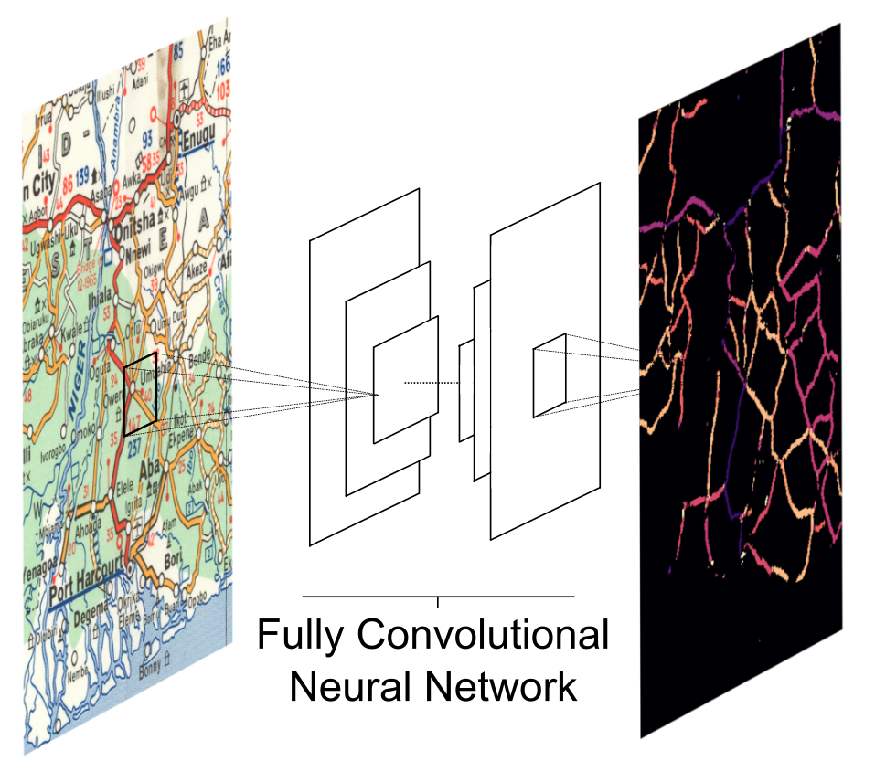

Joint work with Philipp Hunziker
Digitizing African road network data (1966-2017)
We leverage a custom fully convolutional neural network to collect road network data for post-colonial Africa from physical maps and transform the spatial data into a time-variant digital road atlas akin to Google maps. Our primary source consists in the Michelin maps corpus, which is a collection of large topographical maps at a resolution of 1:4,000,000. Each map shows detailed information on road infrastructure with a consistent cartographic symbology for about a third of the continent. While coverage before the 1960s is sporadic, Michelin has covered the entire African continent at intervals of approximately 5 years beginning in the mid 1960s. This makes the Michelin corpus an unparalleled source for time-variant road-network information. In total we digitize 34 map sheets, which combine into 23 maps of the entire continent. Using a custom convolutional neural network for pixel classification, we an digitize the maps in a comparatively cheap, replicable, and scaleable manner.
